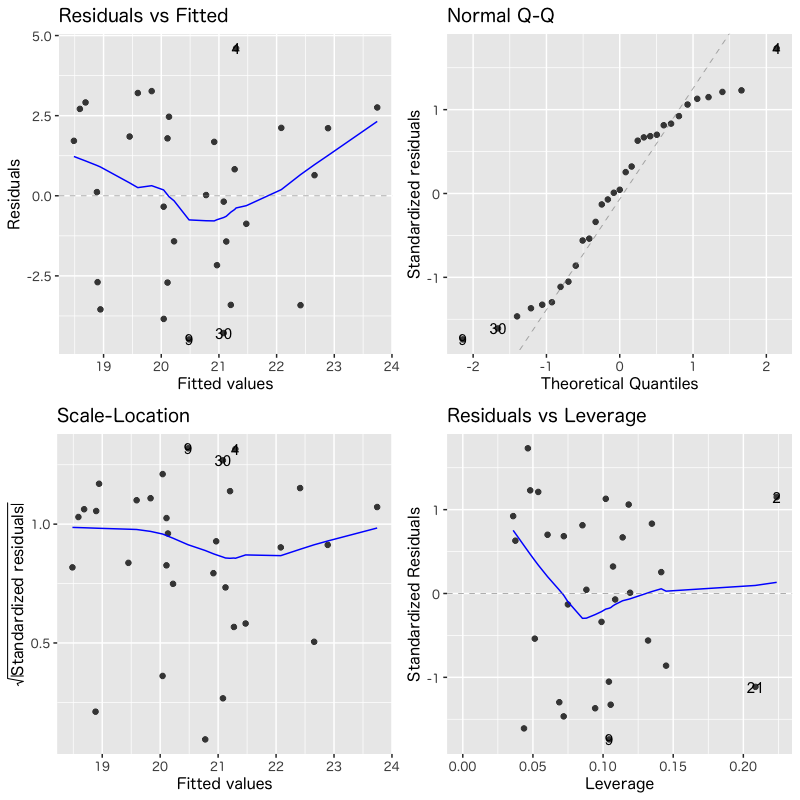

回帰分析
予測と発展的なモデル
(Press ? for help, n and p for next and previous slide)
講義概要
- 第1回: 回帰モデルの考え方と推定
- 第2回: モデルの評価
- 第3回: モデルによる予測と発展的なモデル
回帰分析の復習
線形回帰モデル
- 目的変数 を 説明変数 で説明する関係式を構成
- 説明変数: \(x_1,\dotsc,x_p\) (p次元)
- 目的変数: \(y\) (1次元)
回帰係数 \(\beta_0,\beta_1,\dotsc,\beta_p\) を用いた一次式
\begin{equation} y=\beta_0+\beta_1x_1+\dotsb+\beta_px_p \end{equation}誤差項 を含む確率モデルで観測データを表現
\begin{equation} y_i=\beta_0+\beta_1 x_{i1}+\cdots+\beta_px_{ip}+\epsilon_i \quad (i=1,\dotsc,n) \end{equation}
問題設定
確率モデル
\begin{equation} \boldsymbol{y} =X\boldsymbol{\beta}+\boldsymbol{\epsilon}, \quad\boldsymbol{\epsilon}\sim\text{確率分布} \end{equation}式の評価 : 残差平方和 の最小化による推定
\begin{equation} S(\boldsymbol{\beta}) =(\boldsymbol{y}-X\boldsymbol{\beta})^{\mathsf{T}} (\boldsymbol{y}-X\boldsymbol{\beta}) \end{equation}
解とその一意性
解の条件 : 正規方程式
\begin{equation} X^{\mathsf{T}}X\boldsymbol{\beta} =X^{\mathsf{T}}\boldsymbol{y} \end{equation}解の一意性 : Gram 行列 \(X^{\mathsf{T}}X\) が正則
\begin{equation} \hat{\boldsymbol{\beta}} = (X^{\mathsf{T}}X)^{-1} X^{\mathsf{T}}\boldsymbol{y} \end{equation}
解析の事例
気温に影響を与える要因の分析
データの概要
日付 気温 降雨 日射 降雪 風向 風速 気圧 湿度 雲量
- 気温を説明する5種類の線形回帰モデルを検討
- モデル1 : 気温 = F(気圧)
- モデル2 : 気温 = F(日射)
- モデル3 : 気温 = F(気圧, 日射)
- モデル4 : 気温 = F(気圧, 日射, 湿度)
- モデル5 : 気温 = F(気圧, 日射, 雲量)
分析の視覚化
関連するデータの散布図

Figure 1: 散布図
観測値とあてはめ値の比較

Figure 2: モデルの比較
寄与率
決定係数 (R-squared)
\begin{equation} R^2 = 1-\frac{\sum_{i=1}^n\hat{\epsilon}_i^2}{\sum_{i=1}^n(y_i-\bar{y})^2} \end{equation}自由度調整済み決定係数 (adjusted R-squared)
\begin{equation} \bar{R}^2 = 1-\frac{\frac{1}{n{-}p{-}1}\sum_{i=1}^n\hat{\epsilon}_i^2} {\frac{1}{n{-}1}\sum_{i=1}^n(y_i-\bar{y})^2} \end{equation}- 不偏分散で補正
モデルの評価
決定係数(\(R^{2}\)・ Adjusted \(R^{2}\))によるモデルの比較
Beta 95% CI Beta 95% CI Beta 95% CI Beta 95% CI Beta 95% CI Abbreviation: CI = Confidence Interval
\(F\)統計量による検定
- 説明変数のうち1つでも役に立つか否かを検定する
- 帰無仮説 \(H_{0}\): \(\beta_1=\dotsb=\beta_p=0\)
- 対立仮説 \(H_{1}\): \(\exists j\;\beta_j\neq0\) (少なくとも1つは役に立つ)
\(F\)統計量: 決定係数(または残差)を用いて計算
\begin{equation} F =\frac{n{-}p{-}1}{p}\frac{R^2}{1-R^2} \end{equation}- \(p\)値: 自由度 \(p,n{-}p{-}1\) の \(F\)分布で計算
モデルの評価
\(F\)統計量によるモデルの比較
Beta 95% CI Beta 95% CI Beta 95% CI Beta 95% CI Beta 95% CI Abbreviation: CI = Confidence Interval
\(t\)統計量による検定
- 回帰係数 \(\beta_j\) が回帰式に寄与するか否かを検定する
- 帰無仮説 \(H_{0}\): \(\beta_j=0\)
- 対立仮説 \(H_{1}\): \(\beta_j\neq0\) (\(\beta_j\) は役に立つ)
\(t\)統計量: 各係数ごと，\(\zeta^{2}\) は \((X^{\mathsf{T}} X)^{-1}\) の対角成分
\begin{equation} t=\frac{\hat{\beta}_j}{\hat{\sigma}\zeta_{j}} \end{equation}- \(p\)値: 自由度 \(n{-}p{-}1\) の \(t\)分布を用いて計算
モデルの評価
\(t\)統計量によるモデルの比較
Beta SE Statistic p-value Beta SE Statistic p-value Beta SE Statistic p-value Beta SE Statistic p-value Beta SE Statistic p-value Abbreviations: CI = Confidence Interval, SE = Standard Error
診断プロットによる評価
- 回帰モデルのあてはまりを視覚的に評価
- Residuals vs Fitted: あてはめ値(予測値)と残差の関係(誤差の独立性)
- Normal Q-Q: 残差の正規性の確認
- Scale-Location: あてはめ値と正規化した残差の関係(分散の一様性)
- Residuals vs Leverage: 正規化した残差とテコ比の関係(外れ値)
モデル2

Figure 3: モデル2の診断
モデル3

Figure 4: モデル3の診断
モデル4

Figure 5: モデル4の診断
回帰モデルによる予測
予測
新しいデータ (説明変数) \(\boldsymbol{x}\) に対する 予測値
\begin{equation} \hat{y} = (1,\boldsymbol{x}^{\mathsf{T}})\hat{\boldsymbol{\beta}}, \qquad \hat{\boldsymbol{\beta}} = (X^{\mathsf{T}}X)^{-1} X^{\mathsf{T}}\boldsymbol{y} \end{equation}予測値は元データの目的変数の重み付け線形和
\begin{equation} \hat{y} = \boldsymbol{w}(\boldsymbol{x})^{\mathsf{T}}\boldsymbol{y}, \qquad \boldsymbol{w}(\boldsymbol{x})^{\mathsf{T}} = (1,\boldsymbol{x}^{\mathsf{T}}) (X^{\mathsf{T}}X)^{-1} X^{\mathsf{T}} \end{equation}- 重みは元データと新規データの説明変数で決定
予測値の性質
推定量は以下の性質をもつ多変量正規分布
\begin{align} \mathbb{E}[\hat{\boldsymbol{\beta}}] &=\boldsymbol{\beta}\\ \mathrm{Cov}(\hat{\boldsymbol{\beta}}) &=\sigma^{2}(X^{\mathsf{T}}X)^{-1} \end{align}この性質を利用して以下の3つの値の違いを評価
\begin{align} y&=(1,\boldsymbol{x}^{\mathsf{T}})\boldsymbol{\beta}+\epsilon &&\text{(観測値)}\\ \tilde{y}&=(1,\boldsymbol{x}^{\mathsf{T}})\boldsymbol{\beta} &&\text{(最適な予測値)}\\ \hat{y}&=(1,\boldsymbol{x}^{\mathsf{T}})\hat{\boldsymbol{\beta}} &&\text{(回帰式による予測値)} \end{align}- \(\hat{y}\) と \(y\) は独立な正規分布に従うことに注意
信頼区間
最適な予測値との差
差の分布は以下の平均・分散をもつ正規分布に従う
\begin{align} \mathbb{E}[\tilde{y}-\hat{y}] &=(1,\boldsymbol{x}^{\mathsf{T}})\boldsymbol{\beta} -(1,\boldsymbol{x}^{\mathsf{T}})\mathbb{E}[\hat{\boldsymbol{\beta}}] =0\\ \mathrm{Var}(\tilde{y}-\hat{y}) &=\underbrace{\sigma^{2}(1,\boldsymbol{x}^{\mathsf{T}})(X^{\mathsf{T}}X)^{-1} (1,\boldsymbol{x}^{\mathsf{T}})^{\mathsf{T}}}_{\text{\(\hat{\boldsymbol{\beta}}\)の推定誤差による分散}} =\sigma^{2}\gamma_{c}(\boldsymbol{x})^{2} \end{align}標準化による表現
\begin{equation} \frac{\tilde{y}-\hat{y}}{\sigma\gamma_{c}(\boldsymbol{x})} \sim \mathcal{N}(0,1) \end{equation}
信頼区間
未知の分散を不偏分散で推定
\begin{equation} Z= \frac{\tilde{y}-\hat{y}}{\hat{\sigma}\gamma_{c}(\boldsymbol{x})} \sim \mathcal{T}(n{-}p{-}1) \quad (\text{\(t\)分布}) \end{equation}確率 \(\alpha\) の信頼区間
\begin{equation} \mathcal{I}^{c}_{\alpha} = \left( \hat{y}-C_{\alpha}\hat{\sigma}\gamma_{c}(\boldsymbol{x}),\; \hat{y}+C_{\alpha}\hat{\sigma}\gamma_{c}(\boldsymbol{x}) \right) \end{equation}\begin{equation} P(|Z| < {C_{\alpha}} | Z\sim\mathcal{T}(n{-}p{-}1)) =\alpha \end{equation}- 最適な予測値 \(\tilde{y}\) が入ることが期待される区間
予測区間
観測値との差
差の分布は以下の平均・分散をもつ正規分布に従う
\begin{align} \mathbb{E}[y-\hat{y}] &=(1,\boldsymbol{x}^{\mathsf{T}})\boldsymbol{\beta} +\mathbb{E}[\boldsymbol{\epsilon}] -(1,\boldsymbol{x}^{\mathsf{T}}) \mathbb{E}[\hat{\boldsymbol{\beta}}] =0\\ \mathrm{Var}(y-\hat{y}) &=\underbrace{\sigma^{2} (1,\boldsymbol{x}^{\mathsf{T}})(X^{\mathsf{T}}X)^{-1} (1,\boldsymbol{x}^{\mathsf{T}})^{\mathsf{T}} }_{\text{\(\hat{\boldsymbol{\beta}}\)の推定誤差による分散}} +\underbrace{\sigma^{2}}_{\text{誤差の分散}} =\sigma^{2}\gamma_{p}(\boldsymbol{x})^{2} \end{align}標準化による表現
\begin{equation} \frac{y-\hat{y}}{\sigma\gamma_{p}(\boldsymbol{x})} \sim \mathcal{N}(0,1) \end{equation}
予測区間
未知の分散を不偏分散で推定
\begin{equation} Z= \frac{y-\hat{y}}{\hat{\sigma}\gamma_{p}(\boldsymbol{x})} \sim \mathcal{T}(n{-}p{-}1) \quad (\text{\(t\)分布}) \end{equation}確率 \(\alpha\) の予測区間
\begin{equation} \mathcal{I}^{p}_{\alpha} = \left( \hat{y}-C_{\alpha}\hat{\sigma}\gamma_{p}(\boldsymbol{x}),\; \hat{y}+C_{\alpha}\hat{\sigma}\gamma_{p}(\boldsymbol{x}) \right) \end{equation}\begin{equation} P(|Z| < {C_{\alpha}} | Z\sim\mathcal{T}(n{-}p{-}1)) =\alpha \end{equation}- 観測値 \(y\) が入ることが期待される区間
- \(\gamma_{p}>\gamma_{c}\) なので信頼区間より広くなる
実習
発展的なモデル
非線形性を含むモデル
- 目的変数 \(y\)
- 説明変数 \(x_1,\dotsc,x_p\)
- 説明変数の追加で対応可能
- 交互作用 (交差項) : \(x_ix_j\) のような説明変数の積
- 非線形変換 : \(\log(x_k)\) のような関数による変換
カテゴリカル変数を含むモデル
- 数値ではないデータ
- 悪性・良性
- 血液型 (A型,B型,AB型,O型)
- 適切な方法で数値に変換して対応:
- 2値の場合は 1,0 (真，偽) を割り当てる
- 悪性 : 1
- 良性 : 0
- 3値以上の場合は ダミー変数 を利用する (カテゴリ数-1個)
- A型 : (1,0,0)
- B型 : (0,1,0)
- O型 : (0,0,1)
- AB型 : (0,0,0)
- 2値の場合は 1,0 (真，偽) を割り当てる
実習
次回の予定
- 第1回: 主成分分析の考え方
- 第2回: 分析の評価と視覚化